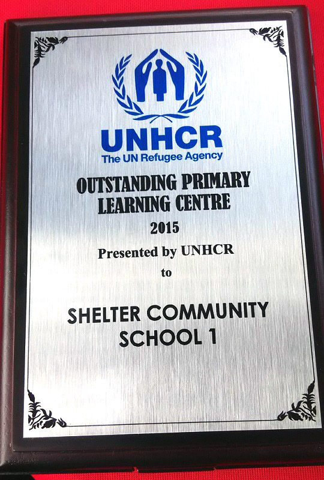

Awards
The United Nations High Commissioner for Refugees (UNHCR)
The United Nations High Commissioner for Refugees (UNHCR) awarded SHELTER Community School 1 (SCS1) with the "Outstanding Primary Learning Centre" Award. SCS1 is one of the five schools for refugee children that is under SHELTER. UNHCR gave out awards for the Secondary, Primary and Preschool categories for the learning centres for refugees. SCS1 was the winner among other 125 centres in Malaysia in the Primary category.
SCS1, in line of its vision to "shelter the future generation", does not constrain her care to only certain races but to all children who seek refuge and aid.
SCS1 employs a more creative and non-conventional learning approach for its students. The school also strives to give the best education they can offer for their students.
2004 Asia Pacific NGO Awards
SHELTER was the Malaysian winner of the inaugural 2004 Asia Pacific NGO Awards.
SHELTER strives for integrity, trustworthiness, expertise and knowledge, and high standards of performance. The Asia Pacific NGO Awards which had the theme: "celebrating success.... rewarding excellence" attests to SHELTER's professionalism in the area of finance and donations. SHELTER has internal and external checks and balances to ensure that donations from the public do not go amiss.
The Asia Pacific NGO Awards, organized by the Resource Alliance and Citigroup Asia Pacific, and funded by the Citigroup Foundation, is the only regional competition of its kind that celebrates and rewards the best NGOs/non-profit organizations. First launched in 2004, the Awards focused on professional management, innovation in local resource mobilization, and the effectiveness of the organization's programs in improving the lives of the people they serve.

Anugerah Khas
SHELTER was awarded with an 'Anugerah Khas' (Special Award) by the Prison Department of Malaysia in conjunction with their launching of National Level Prisons Day celebration at Prison College in Kajang on 4th November 2007.
The award was given in recognition of SHELTER's commitment in working with the prison authorities and providing prison educational development services for young prisoners in Kajang Prison.
Effective 2005, SHELTER started a program for male young prisoners at Kajang prison to provide a range of educational and rehabilitation services including group intervention activities, academic enhancement classes, legal aid, vocational training, and counseling for family reconciliation.
SHELTER also offered after-release rehabilitation programs for remanded young prisoners, it covered programs targeted at keeping minor offenders out of prison, provided treatment to young prisoners who are victims of child abuse and neglect, helped them to employment opportunities, provided counseling for young prisoners and their families and many more, including forming a brass band for young prisoners in prison and a halfway home.
As a sign of recognition and acknowledgement of SHELTER's commitment towards educational and rehabilitation activities of young prisoners in Kajang Prison, it offers SHELTER's further commitment to increase quality services towards excellence.
The then Executive Director, Mr. James Nayagam, said the award further encourage him to work harder for the development of young prisoners in Kajang prison alone but also in all the prisons in Malaysia if they need our services. He further emphasized, SHELTER will always support our government's policy in preventing and reducing crime in our country. At the moment, SHELTER has discontinued this program.